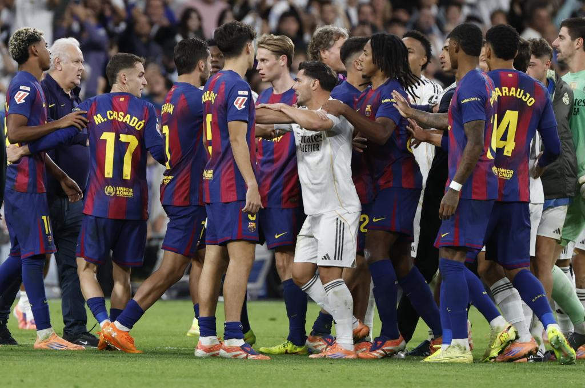
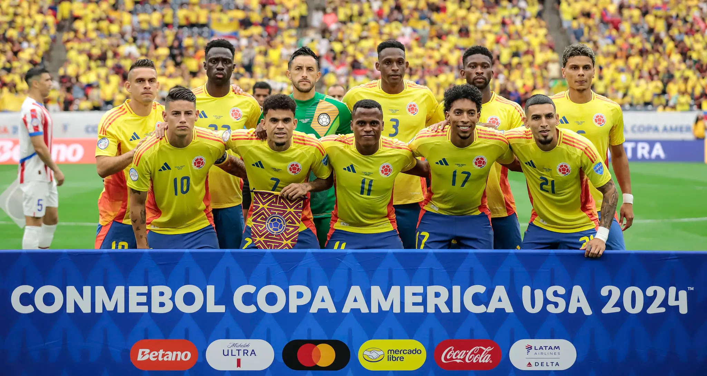
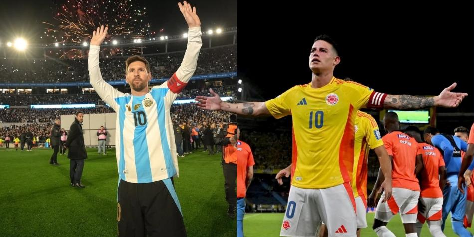
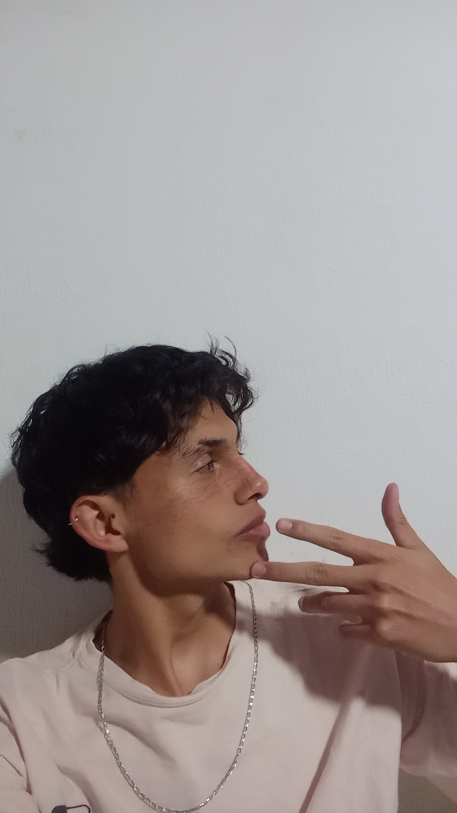

Cuando el fútbol deja de ser solo fútbol: Independiente vs. Universidad de Chile
Un partido marcado por la tensión, los incidentes y las consecuencias que fueron más allá del resultado.
Leer análisis →PERIODISMO DEPORTIVO
Análisis, opinión y relatos sobre lo que ocurre dentro y fuera de la cancha.

Un partido marcado por la tensión, los incidentes y las consecuencias que fueron más allá del resultado.
Leer análisis →SELECCIÓN EDITORIAL

Expectativas, liderazgo, contexto táctico y la presión que rodea a la Tricolor.

Una mirada al clásico como choque deportivo, cultural e identitario.

El valor de una generación propia antes de pensar en la despedida de Messi.

El nuevo proyecto y su lugar dentro del fútbol profesional colombiano.
TEMAS
“No solo contamos qué pasó.
Intentamos entender por qué.”

SOBRE MÍ
Estudiante de Comunicación Social y Periodismo y creador de Perspectiva. Este espacio reúne mis análisis, opiniones y trabajos sobre fútbol, con especial interés por el contexto, la táctica y las historias que explican lo que sucede en la cancha.
Ver portafolio →